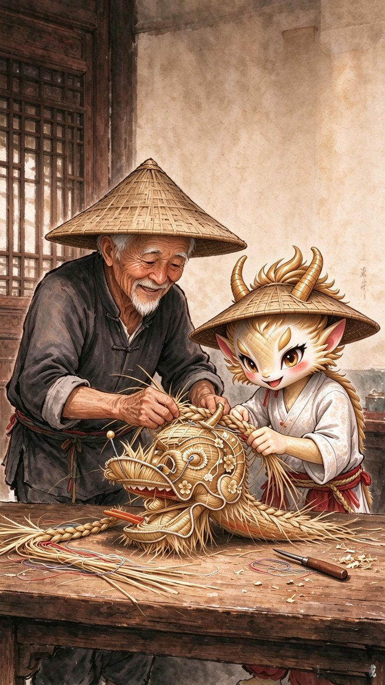
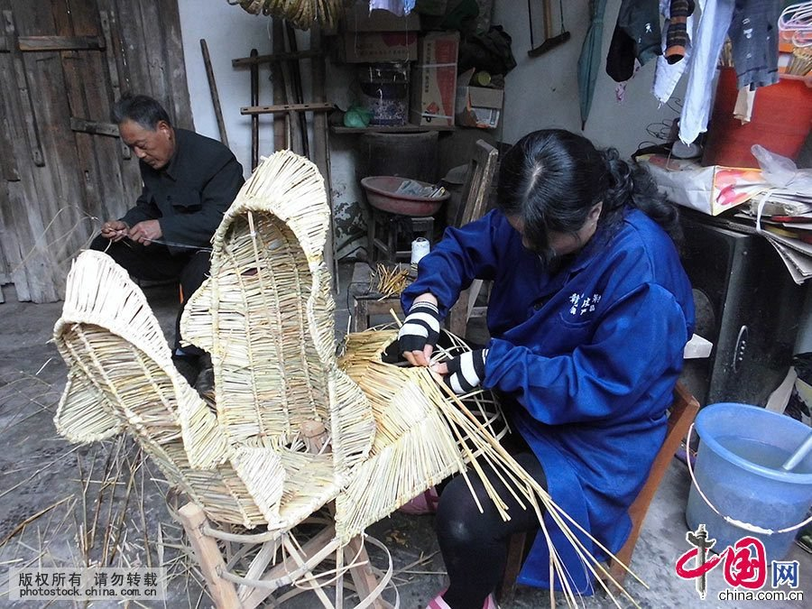

一双手四代人

实景 · 图/中国网接下来这几页，是这双手做的事。
喻芳泽师从周云开，一生编龙。女儿喻远莉为第四代传承人，能独立编完整条草龙。
草编（湖口草龙）为国家级非物质文化遗产代表性项目，编号Ⅶ-54；喻芳泽为第三批国家级非遗代表性传承人。
记住这个动作——它最后还是会被烧掉。但那时，灰会回到田里。
上滑


实景 · 图/中国网接下来这几页，是这双手做的事。
喻芳泽师从周云开，一生编龙。女儿喻远莉为第四代传承人，能独立编完整条草龙。
草编（湖口草龙）为国家级非物质文化遗产代表性项目，编号Ⅶ-54；喻芳泽为第三批国家级非遗代表性传承人。
记住这个动作——它最后还是会被烧掉。但那时，灰会回到田里。